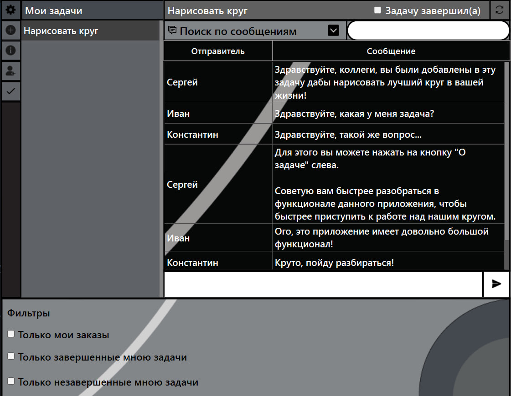

Казаков Сергей Максимович
Москва
C++ Developer
Я - начинающий C++ разработчик
Неплохо ориентируюсь в языке и фреймворке Qt. Каждый день повышаю свои навыки
и учусь новому, постоянно практикуюсь, создавая свои собственные проекты.
В своих проектах я активно применяю SQL, разрабатываю базы данных
Работал с MySQL и SQLite в своих проектах.
Знаю и умею много, что не знаю - сам найду и выучу, что не умею - сам научусь, или вежливо спрошу у коллег.
Очень хочу развиваться профессионально и готов к трудностям.
Мои контакты и соц.сети
+79858850963 | sergeykaz.work@gmail.com |Github: https://github.com/IAmSergeyKazakov
Telegram: https://t.me/LubluSnickers
Навыки
- C++
- Qt Framework
- SQL (MySQL, SQLite)
- STL
- GUI
- Parsing
- git
- MS Excel
- HTML
- CSS
Проекты
Qt Проекты
- TaskManager. Единая среда проектного и коммуникационного взаимодействия сотрудников со встроенным чатом 
- Система пользователей, валидация
- Встроенный мессенджер
- Возможность создания задачи, прикрепление выбранных пользователей к ней с описанием их личных заданий
- Возможность просмотра информации о задаче
- Возможность просмотра информации о законченных задачах
- Возможность добавления новых исполнителей к уже существующей задаче
- Hospital Helper. Помощник для мед.персонала в больницах
- Система пользователей, валидация
- Возможность создания новой записи. Автоматическое удаление неактуальных (прошедших) записей
- Возможность просмотра всех записей, возможность их удаления
- Возможность просмотра всех пациентов
- Посмотр занятых записей (закрашенные красным дни в виджете календаря на выбранную дату для конкретного врача)
- Удаление пациентов (выписка)
- Добавление новых пациентов (госпитализация)
Диаграмма базы данных
Функционал
Стек
C++, Qt, MySQL, STL, CSS (QSS)
Стек
C++, Qt, MySQL, STL, CSS (QSS)
Функционал
Стек
C++, Qt, SQLite, STL, CSS (QSS)
Стек
C++, Qt, SQLite, STL, CSS (QSS)
Консольные приложения
Образование (2024 - 2028)
Московский государственный университет геодезии и картографии (МИИГАиК)
Уровень: высшее
Факультет геоинформатики и информационной безопасности
Направление: Информационные системы и технологии
Пройденные курсы:
Московский физико-технический институт - Программирование на C++ (144 часа)
Национальный исследовательский университет "Высшая Школа Экономики" - Программирование на C++